First look at Godot's interface
This page will give you a brief overview of Godot's interface. We're going to look at the different main screens and docks to help you situate yourself.
See also
For a comprehensive breakdown of the editor's interface and how to use it, see the Editor manual.
The Project Manager
When you launch Godot, the first window you see is the Project Manager. In the default tab Projects, you can manage existing projects, import or create new ones, and more.
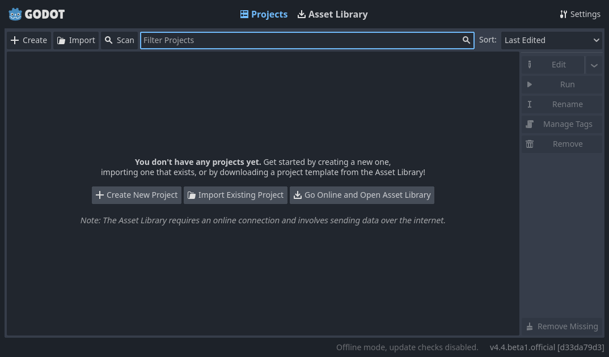
At the top of the window, there is another tab named Asset Library. The first time you go to this tab you'll see a "Go Online" button. For privacy reasons, the Godot project manager does not access the internet by default. To change this click the "Go Online" button. You can change this option later in the settings.
Once your network mode is set to "online", you can search for demo projects in the open source asset library, which includes many projects developed by the community:
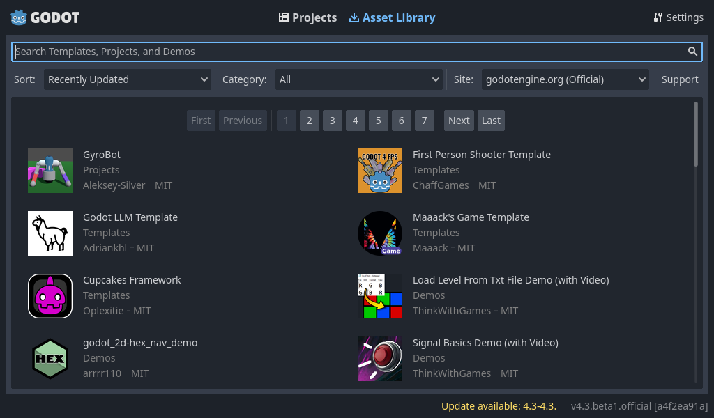
The Project Manager's settings can be opened using the Settings menu:

From here, you can change the editor's language (default is the system language), interface theme, display scale, network mode, and also the directory naming convention.
See also
To learn the Project Manager's ins and outs, read Using the Project Manager.
First look at Godot's editor
When you open a new or an existing project, the editor's interface appears. Let's look at its main areas:

By default, along the window's top edge, it features main menu on the left, workspace switching buttons in the center (active workspace is highlighted), and playtest buttons and the Movie Maker Mode toggle on the right:
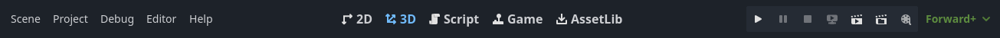
Just below the workspace buttons, the opened scenes as tabs are seen. The plus (+) button right next to the tabs will add a new scene to the project. With the button on the far right, distraction-free mode can be toggled, which maximizes or restores the viewport's size by hiding docks in the interface:
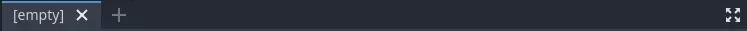
In the center, below the scene selector is the viewport with its toolbar at the top, where you'll find different tools to move, scale, or lock the scene's nodes (currently the 3D workspace is active):

This toolbar changes based on the context and selected node. Here is the 2D toolbar:
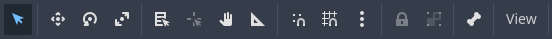
Below is the 3D one:
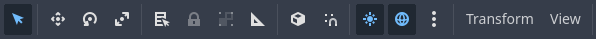
See also
To learn more on workspaces, read The five main screens.
See also
To learn more on the 3D viewport and 3D in general, read Introduction to 3D.
On either side of the viewport sit the docks. And at the bottom of the window lies the bottom panel.
Let's look at the docks. The FileSystem dock lists your project files, including scripts, images, audio samples, and more:
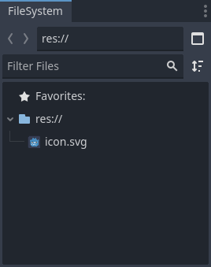
The Scene dock lists the active scene's nodes:

The Inspector allows you to edit the properties of a selected node:

See also
To read more on inspector, see Inspector Dock.
See also
Docks can be customized. Read more on Moving and resizing docks.
The bottom panel, situated below the viewport, is the host for the debug console, the animation editor, the audio mixer, and more. They can take precious space, that's why they're folded by default:
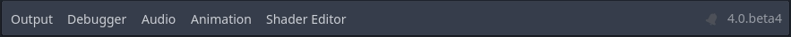
When you click on one, it expands vertically. Below, you can see the animation editor opened:
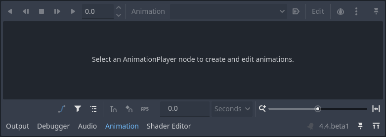
Bottom panels can also be shown or hidden using the shortcuts defined in Editor Settings > Shortcuts, under the Bottom Panels category.
The five main screens
There are five main screen buttons centered at the top of the editor: 2D, 3D, Script, Game and Asset Library.
You'll use the 2D screen for all types of games. In addition to 2D games, the 2D screen is where you'll build your interfaces.
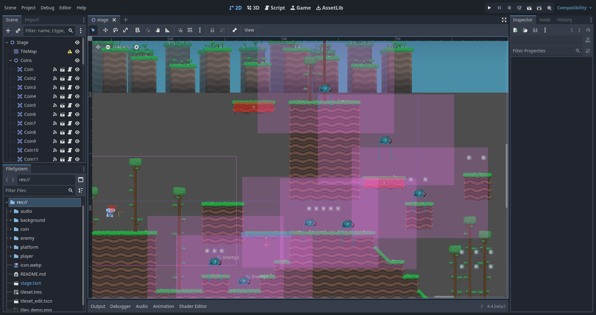
In the 3D screen, you can work with meshes, lights, and design levels for 3D games.

Note
Read Introduction to 3D for more detail about the 3D main screen.
The Game screen is where your project will appear when running it from the editor. You can go through your project to test it, and pause it and adjust it in real time. Note that this is for testing how adjustments would work, any changes made here are not saved when the game stops running.

The Script screen is a complete code editor with a debugger, rich auto-completion, and built-in code reference.

Finally, the Asset Library is a library of free and open source add-ons, scripts, and assets to use in your projects.
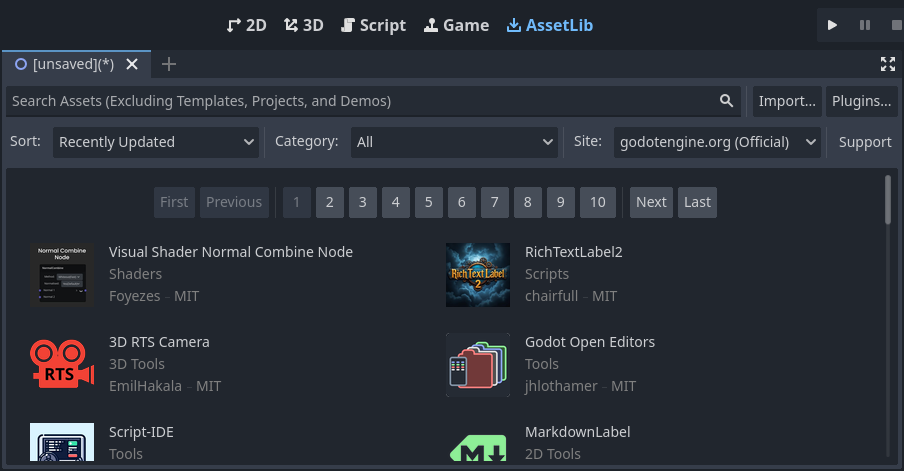
See also
You can learn more about the asset library in About the Asset Library.
Integrated class reference
Godot comes with a built-in class reference.
You can search for information about a class, method, property, constant, or signal by any one of the following methods:
Pressing F1 (or Opt + Space on macOS, or Fn + F1 for laptops with a Fn key) anywhere in the editor.
Clicking the "Search Help" button in the top-right of the Script main screen.
Clicking on the Help menu and Search Help.
Ctrl + Click (Cmd + Click on macOS) on a class name, function name, or built-in variable in the script editor.

When you do any of these, a window pops up. Type to search for any item. You can also use it to browse available objects and methods.

Double-click on an item to open the corresponding page in the script main screen.
Alternatively,
Clicking while pressing Ctrl (Cmd on macOS) on a class name, function name, or built-in variable in the script editor.
Right-clicking on nodes and choosing Open Documentation or choosing Lookup Symbol for elements in script editor will directly open their documentation.